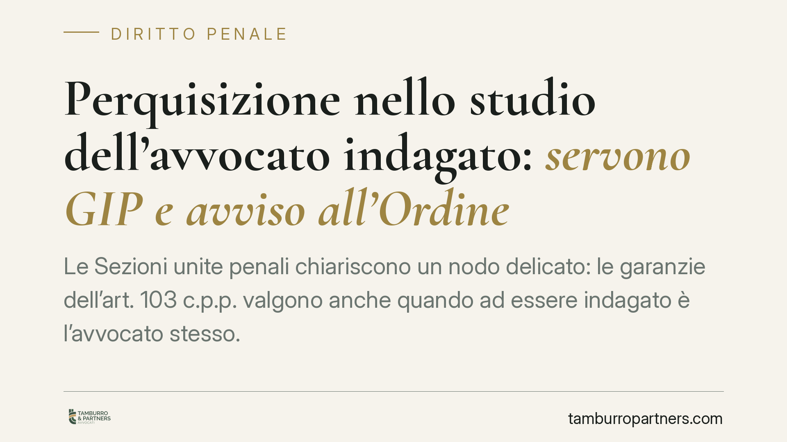

Perquisizione nello studio dell'avvocato indagato: servono GIP e avviso all'Ordine
Le Sezioni unite penali chiariscono un nodo delicato: le garanzie dell'art. 103 c.p.p. valgono anche quando ad essere indagato è l'avvocato stesso. Ispezioni, perquisizioni e sequestri nel suo studio richiedono l'autorizzazione del GIP e l'avviso al Consiglio dell'ordine. Una tutela pensata non tanto per il professionista, quanto per i clienti estranei all'indagine.

Il caso
La Corte di cassazione, riunita nella sua massima composizione (le Sezioni unite penali), ha affrontato una questione ricorrente nella pratica: quando l'avvocato non è terzo rispetto al procedimento, ma è lui l'indagato, le garanzie previste per il suo studio restano in piedi?
La risposta è affermativa. Le Sezioni unite hanno stabilito che le tutele dell'art. 103 del codice di procedura penale si applicano anche in questo scenario. Perquisire lo studio di un avvocato indagato non è un atto libero nelle mani del pubblico ministero: serve l'autorizzazione preventiva del giudice per le indagini preliminari (il GIP) e l'avviso al Consiglio dell'ordine forense competente.
Inquadramento normativo
L'art. 103 c.p.p. detta le "garanzie di libertà del difensore". Il comma 2 prevede che ispezioni, perquisizioni e sequestri negli studi legali possano avvenire solo nei casi tassativi indicati dalla legge. Il comma 3 stabilisce che il Consiglio dell'ordine forense abbia diritto di essere avvisato e che un suo rappresentante possa assistere alle operazioni.
Storicamente si discuteva se queste cautele operassero solo quando l'avvocato fosse estraneo all'indagine — semplice custode di documenti e segreti di terzi — oppure anche quando fosse egli stesso il soggetto indagato. Le Sezioni unite hanno sciolto il dubbio: la garanzia non decade per il solo fatto che l'avvocato sia coinvolto come indagato.
Un secondo profilo rilevante riguarda l'ambito applicativo. La Corte ha precisato che la tutela non copre solo l'attività difensiva penale, ma si estende anche alle difese svolte in cause civili e amministrative. Il perimetro protetto è dunque l'intera attività professionale, non il singolo procedimento penale.
Perché la tutela esiste
È un punto che merita chiarezza. La norma non protegge l'avvocato in quanto tale, né gli concede un privilegio personale. Protegge la riservatezza dei clienti che con quell'indagine non hanno nulla a che vedere.
Lo studio di un professionista contiene fascicoli, corrispondenza e documenti riferiti a decine, a volte centinaia di assistiti. Un accesso investigativo non filtrato rischierebbe di travolgere il segreto professionale di soggetti del tutto estranei ai fatti contestati. Il vaglio del GIP e la presenza dell'Ordine servono proprio a contenere questo rischio.
Implicazioni pratiche
Per l'avvocato indagato, la decisione significa che eventuali perquisizioni o sequestri privi di autorizzazione del GIP o dell'avviso all'Ordine sono viziati. Le prove così acquisite possono essere contestate e, nei casi previsti, dichiarate inutilizzabili.
Per il pubblico ministero, il messaggio è netto: la qualità di indagato del difensore non consente scorciatoie procedurali. Il passaggio davanti al giudice diventa condizione dell'atto.
Per i clienti dello studio, la pronuncia rafforza la certezza che la loro corrispondenza e i loro fascicoli non finiscano esposti a causa di vicende che riguardano esclusivamente il professionista.
Resta fermo che le garanzie non sono un'immunità. L'atto investigativo è possibile: deve solo passare attraverso i controlli previsti dalla legge.
Cosa fare in concreto
- Verificate l'autorizzazione. Di fronte a una perquisizione in studio, accertate subito l'esistenza del provvedimento del GIP e chiedete di visionarlo.
- Pretendete l'avviso all'Ordine. Segnalate immediatamente l'obbligo di avviso al Consiglio dell'ordine e la facoltà di presenza di un suo rappresentante durante le operazioni.
- Documentate tutto. Annotate orari, atti compiuti, soggetti presenti ed eventuali irregolarità. Il verbale è la base per ogni successiva contestazione.
- Distinguete i documenti. Segnalate a verbale la presenza di materiale riferibile a clienti estranei all'indagine, coperto da segreto professionale.
- Attivate la difesa tecnica. In caso di vizi, valutate tempestivamente l'eccezione di inutilizzabilità delle prove e gli strumenti di impugnazione disponibili.
Disclaimer
Contributo informativo a cura di Tamburro & Partners - Avv. Giuseppe Tamburro. Non costituisce parere legale.
Ogni condominio ha una storia a sé.
Se gestisci un'amministrazione e vuoi un confronto su una specifica questione condominiale, scrivi allo studio. Ti rispondiamo entro un giorno lavorativo.